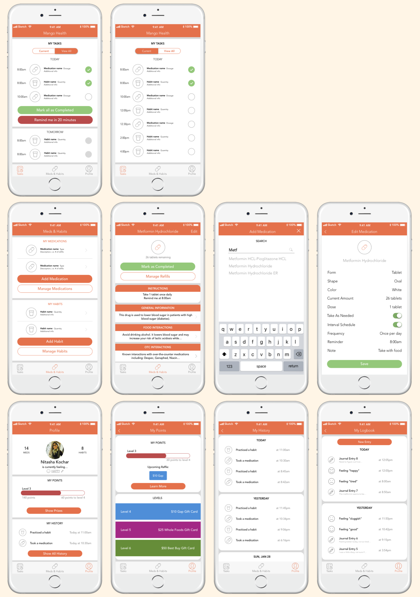

Client:
KPCB 2018 Design Fellows Application
Role:
UX Designer
Tools:
Sketch
Deliverables:
HiFi Screens
Task
Redesign a feature of KPCB company’s product.
After rummaging through KPCB’s portfolio of well-known companies, I decided to take a closer look at Mango Health, an app designed to help people manage their medications and maintain their healthy habits. Studying the app, I noticed that the interface was a little clunky and could do with some retouching, like a more uniform card-based layout and color palette.
Need Finding
The point of a redesign is to address one or many specific problems. So, before firing up my Sketch App, I reviewed Mango’s features and created a list of potential issues I could address.
Note: If I had more time, I would get a larger group of people to download the app and tell me about their experience because more voices and observations are better than one, and learning from and designing for others is crucial in the design process.
Problems
- Disorganized information: the arbitrary inbox tab seems to collect general information about various medications and lacks a clear architecture
- Crowded home page: not knowing where to start, or what to look at first
- Hidden actions: not sure when to tap on something, if It’ll have an action attached, etc.
After maybe only 10 minutes of using the app, I noticed quite a few usability issues. I decided that my goal was to simplify the app’s interface and make it more intuitive for its many different users.
User Need & User Personas
Since designing for people is my main priority, I decided to think about who these people were and what they would want out of the app.
Needs
- A daily overview of what medications they need to take and when
- Helpful reminders with instant actions like “Mark as Completed” or “Remind Me Later”
- Being able to document their experience with new medications
Personas
After defining these areas for improvement, I produced three different personas that I could refer to throughout the design process.
- Amanda, an older, forgetful woman who needs help figuring out which medication to take and when
- Jessica, a busy working parent who balances between taking care of her kids and going to work, so she likes receiving reminders throughout her day
- Sarah, a high-school athlete who was just recently prescribed medication and must take it daily
Potential Solutions
Low-fi Wireframes
Ill-equipped at my temporary dorm in New Zealand, I resorted to the basic pencil and paper method. I thought about ways I could make the home screen less cluttered by focusing on a list of tasks that would guide users throughout their day.
Example of Tasks/Home screen.
Sketch App
The next step in the design process for me was to transfer my low-fi wireframes into high-fi prototypes using Sketch. With Sketch, I was able to clearly demonstrate my ideas and also had room to experiment with new concepts. I focused heavily on aspects such as the color palette, intentional white space, and card-style. Eventually, I reached my final iteration:
Final Product
I superimposed my designs onto iPhone templates in order to get a better sense of what the final product would look like:

Conclusion
In this particular case study, I redesigned Mango Health’s iOS app using my knowledge about design thinking and human-centered design. I focused on issues that real people would have and attempted to address their experiences before confronting the visual design aspect.
From my observations, I developed potential solutions as ways to improve the app experience for a range of users. I reorganized the home page to emphasize tasks as a key feature of the app, I added in markers to convey which buttons and boxes had associating actions, and I enhanced the ‘mood’ feature by including the ability to log detailed experiences. I first depicted my ideas on paper and then translated them into a final high-fi prototype.